About Me
I'm a Software Engineer currently working on backend systems at iFood. My journey in technology started in 2017 and has taken me through software development, cybersecurity, game development and Human-Computer Interaction research. This diverse background shaped how I approach engineering problems — combining analytical thinking, system reliability and user-centered design. I hold a Master's degree in Computer Science (HCI) and I'm also part of 42 School's project-based Software Engineering program, where I focus on low-level programming and operating systems concepts. I enjoy solving complex problems, improving existing systems and turning ideas into working software.
Portfolio
Featured Projects
Passaporte Visite Sao Paulo
First-place hackathon-winning MVP focused on connecting users to local tourism experiences. Led UX research activities including interviews, persona creation and user journey mapping. Defined the product value proposition and designed user flows, from paper wireframes to high-fidelity prototypes. Also implemented a simple web MVP using Python and Flask to support product validation.
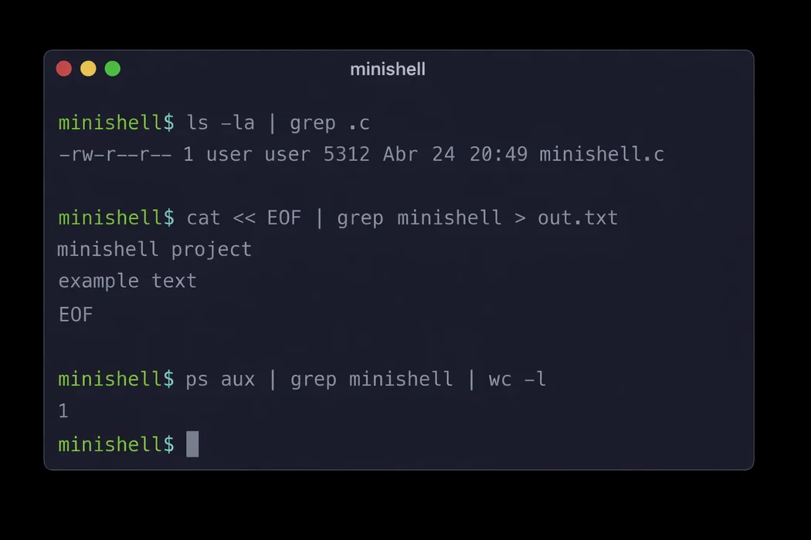
Minishell
Unix-like shell implementation in C developed in a pair-programming context, implementing process management, pipelines, redirections and signal handling. Project explores command parsing, environment management and execution orchestration, deepening understanding of POSIX systems and shell behavior.
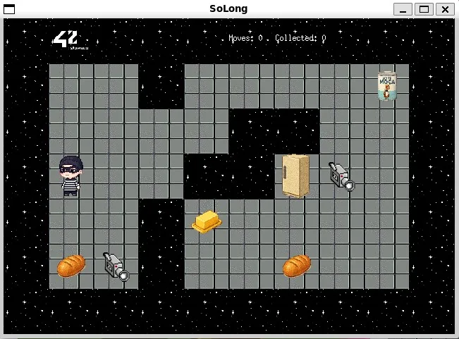
So_long Game
2D game fully implemented in C using the MiniLibX graphics library, featuring custom game loop logic, event handling and map parsing. Developed gameplay systems including enemy behavior, sprite animations, collectible tracking and an in-game movement counter. Implemented pathfinding algorithm validation to ensure map solvability and correct level structure.
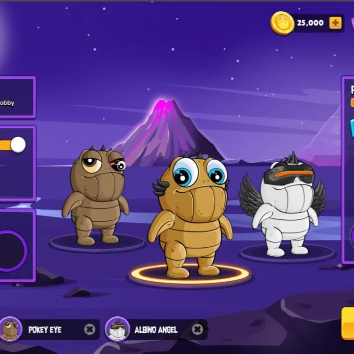
LoveMonster Multiplayer Game
Multiplayer Web3 game where I implemented gameplay mechanics in Unity (C#), contributed to real-time multiplayer server features using TypeScript, and supported web platform development with ASP.NET. Also collaborated on blockchain integration using Solidity and performed security testing activities.
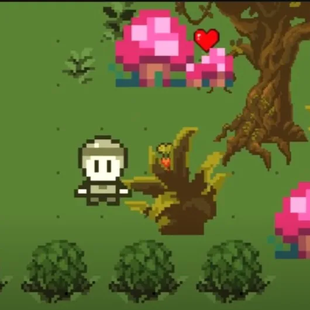
Flash Delirium Game
Authorial 2D action-adventure game fully designed and implemented in Unity (C#), featuring exploration mechanics, real-time combat, item collection systems and puzzle-based progression. Developed core gameplay systems end-to-end, including dialogue flow logic, level design across multiple worlds, UI interactions and narrative progression.
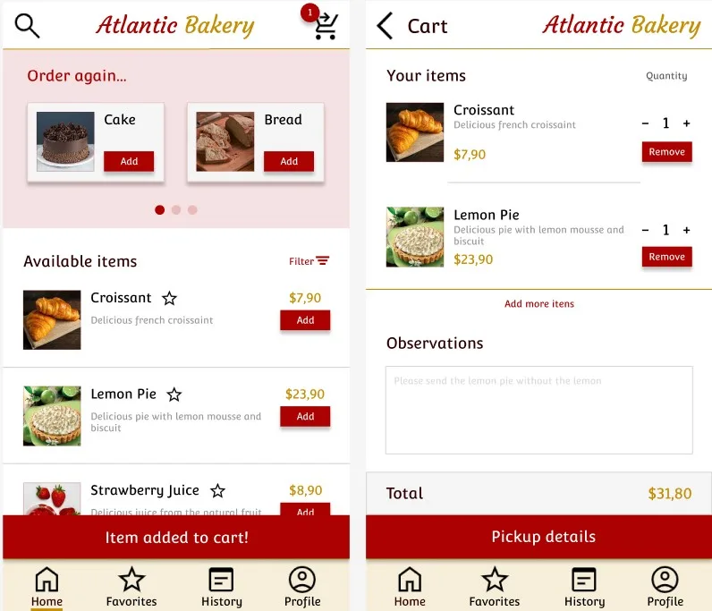
Atlantic Bakery App
Mobile ordering experience designed from research to prototype, focusing on usability, navigation flow and checkout interactions.
Research & Presentations
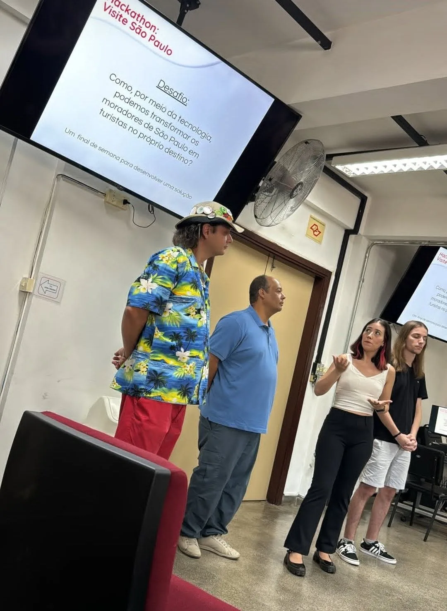
FATEC
Invited presentation at FATEC for tourism students, showcasing the award-winning Passaporte SP solution and discussing product design and digital experience innovation in tourism.
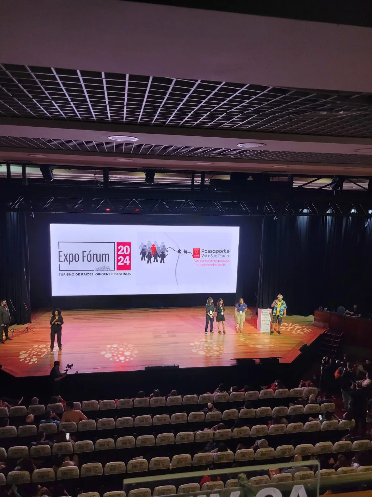
Expo Forum
Industry presentation at Expo Forum (2024), showcasing the award-winning tourism experience platform developed during the Visite Sao Paulo Hackathon.
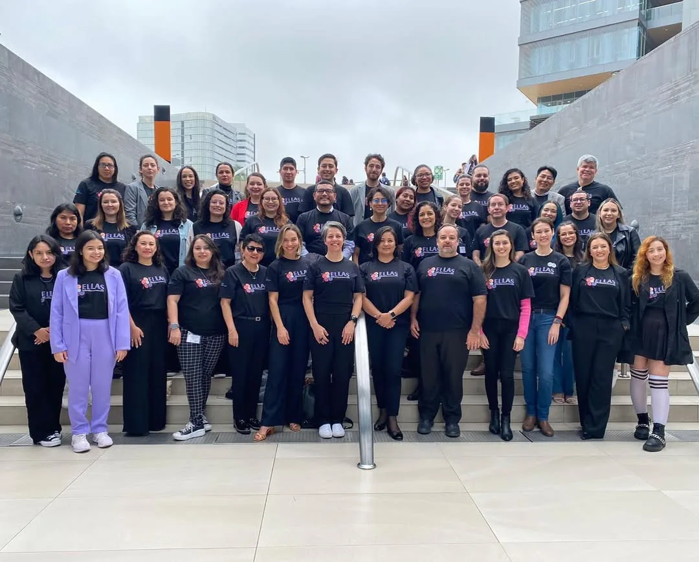
ELLAS — Equality in Leadership for Latin American STEM
Contributed to UX research and interaction design activities within an international research network focused on gender equality policies in STEM leadership across Latin America.
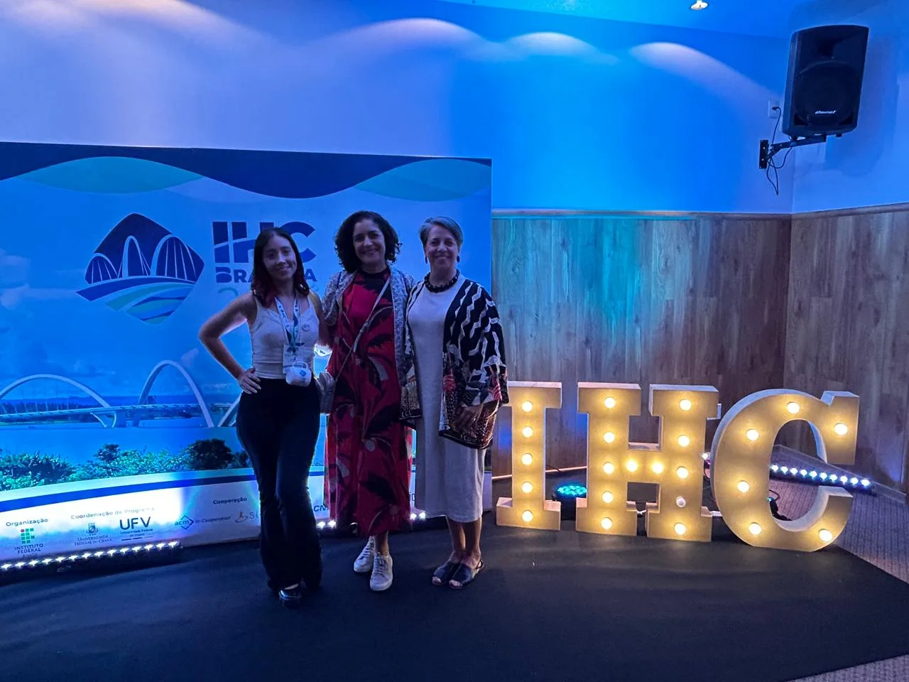
From Barriers to Inclusion: A Female-Inclusive Assessment Framework for Interface Evaluation
Research proposing ATIV, a female-inclusive framework for evaluating interface design, grounded in feminist HCI values and validated through empirical studies with HCI specialists.
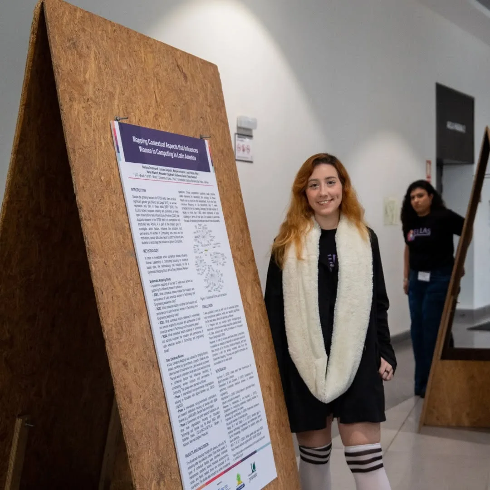
Mapping Contextual Aspects that Influence Women in Computing in Latin America
Systematic mapping study investigating contextual factors influencing women's careers and leadership in computing across Latin America, contributing data to gender equality policy initiatives.
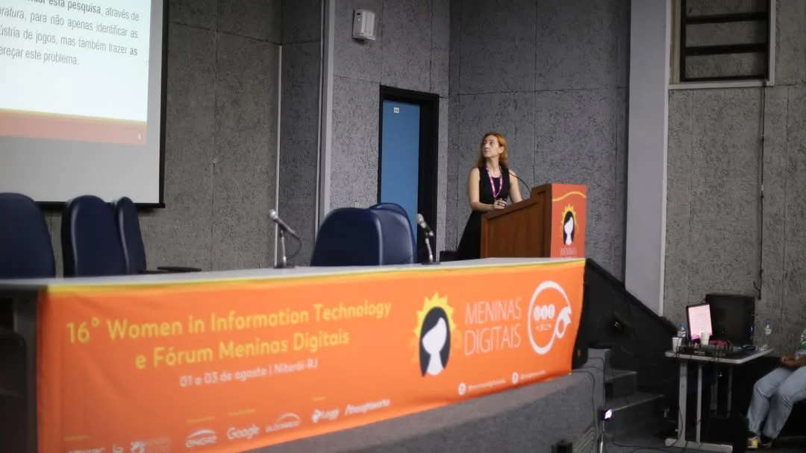
What Are the Challenges Faced by Women in the Games Industry?
Systematic literature review analyzing barriers faced by women in the games industry and approaches adopted by companies to promote gender inclusion.
Honors & Awards
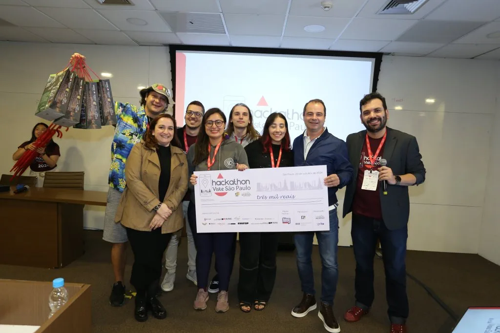
Hackathon Visite Sao Paulo
Winning solution in 1st place at the Hackathon Visite Sao Paulo 2024 challenge.
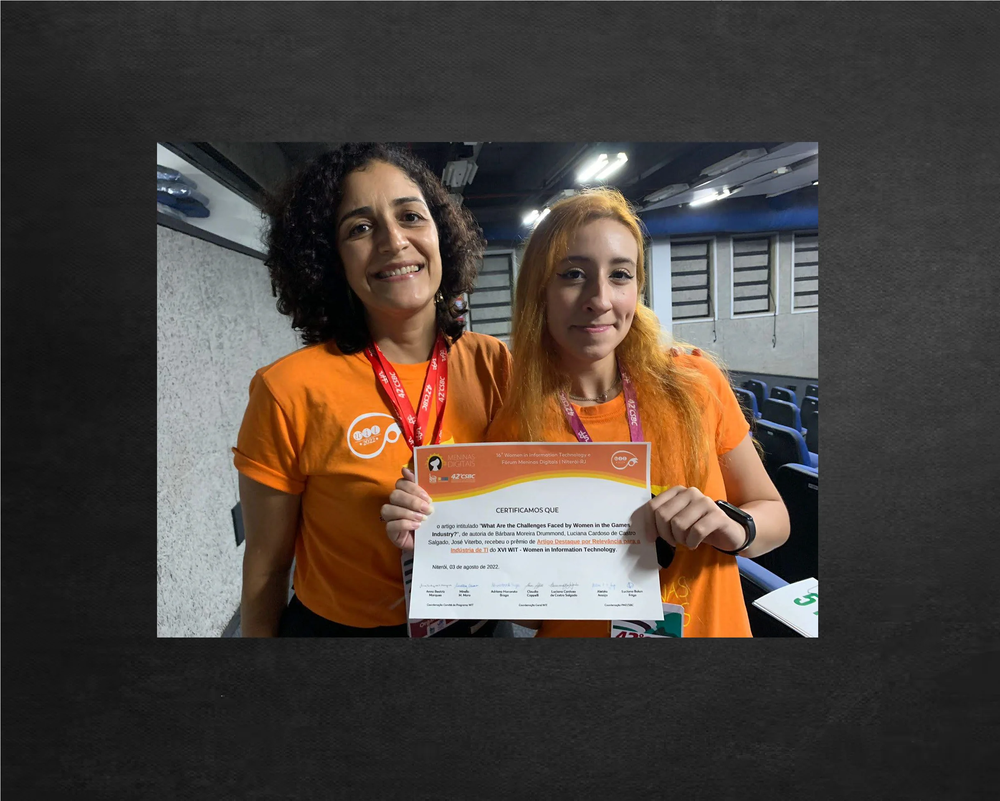
Outstanding Paper Award for Relevance to the IT Industry
The paper titled "What Are the Challenges Faced by Women in the Games Industry?" received the Outstanding Paper Award for Relevance to the IT Industry from the XVI WIT - Women in Information Technology.
Resume
Education
Software Engineering Program
42 School
Master's Degree in Computer Science (GPA 3.5)
Federal Fluminense University (UFF)
Exchange Program - Business Information Systems
Karlsruhe University of Applied Sciences (HKA)
Bachelor of Information Systems (GPA 3.5)
Federal Fluminense University (UFF)
Professional Experience
Software Engineer
IFood
Software Engineer
Halliburton
Cybersecurity Engineer
Andritz
Cybersecurity Engineer
Mercado Bitcoin
Software Development Intern
The Marlo Group
IT Intern
IBM